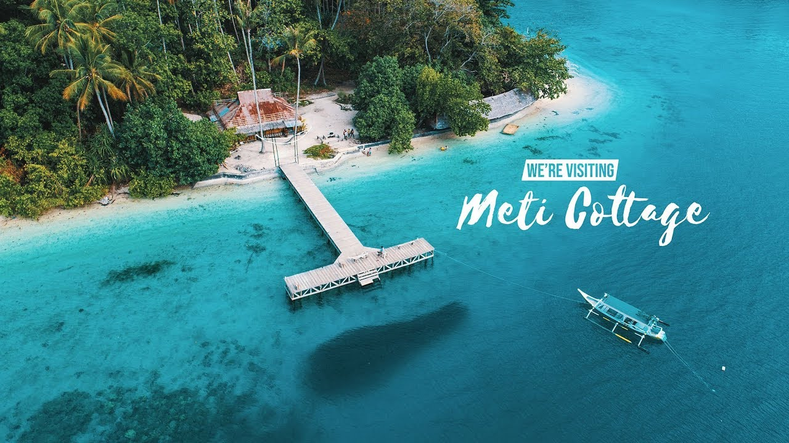

Pantai ini punya teluk yang memikat dan Instagramable. Air lautnya yang bening begitu memanjakan mata wisatawan yang berkunjung.
Selain itu, airnya yang tenang, menbuat nyaman bagi yang berenang. Selain berenang, aktivitas yang cocok dilakukan ketika berada di pantai ini adalah; snorkeling, berperahu, menikmati sunrise dan sunset yang indah.
Sekedar informasi, bahwa untuk melakukan snorkeling anda harus menuju bagian ujung paling utara pantai ini. Di situ anda akan temukan banyak bunga karang yang masih terjaga dengan baik.
Dari tanjung ini, kita bisa melihat dan menikmati suasana sunset yang memikat.
Sesuai dengan namanya, Lokasi Pantai terletak di Desa Luari, Kecamatan Tobelo Utara. Berjarak sekitar 11 kilometer arah utara Kota Tobelo.
Apabila anda ingin berkunjung kesini, banyak angkutan umum yang bisa digunakan untuk sampai ke pantai ini. Antara lain; mikrolet/angkot dengan tujuan Galela. Angkot tersebut sering mangkal di pertigaan Jalan Kemakmuran-Karianga, Kota Tobelo.
Setelah sampai di Ds. Luari, tanyakanlah kepada masyarakatnya, dimana letak pantai luari. Masyarakatnya ramah terhadap tamu. Anda akan dipandu menuju pantai.
- 

Berada di bagian Timur Kota Tobelo, tepatnya di depan bibir pantai Desa Mawea, Tobelo Timur, Halmahera Utara.
Pulau Meti memiliki bentangan alam memesona, seolah surga tersembunyi yang menampakkan diri di pesisir utara Maluku Utara.
Pantainya sangat cantik, dengan hiasan terumbu karang yang masih alami dan terjaga. Siapa menyangka kalau di saat Perang Dunia II pulau ini sempat dijadikan oleh Jepang untuk membangun kekuatan militer melawan sekutu.
Bahkan kamu bisa melihat berbagai artefak sisa peninggalan Jepang di Pulau Meti. Kalau kamu menyelam di sekitar pulau, bisa melihat pesawat tempur yang terkubur di dasar laut.
Akses menuju pulau ini, sangat mudah. Turunlah di Kota Tobelo, kemudian carilah angkutan umum dengan rute Desa Mawea. Begitu sampai di Mawea, lanjutkan perjalanan dengan menggunakan perahu bermesin yang bisa disewa.
Halmahera Utara merupakan salah satu nama kabupaten yang berada di Maluku Utara sebelah utara. Kabupaten yang terdiri atas 17 kecamatan ini membentang dari selatan ke utara dan berbatasan dengan kabupaten pulau Morotai atau Morotai Island. Halmahera Utara sudah dikenal jauh sebelum terbentuknya Maluku Utara sebagai satu provinsi sendiri.
Sebagai wilayah kepulauan, Halmahera Utara tak banyak dikenal oleh masyarakat Indonesia. Maklum, letaknya pun jauh, yakni di wilayah timur Indonesia. Tetapi jangan salah, Halmahera Utara menyimpan begitu banyak objek wisata alam yang masih "perawan" alias tak pernah dijamah atau jarang diketahui oleh masyarakat Indonesia secara umum.
Salah satu view yang menawarkan betapa indahnya Halmahera Utara adalah Tanjung Bungo. Objek ini merupakan salah satu objek wisata alam berupa hamparan pulau-pulau kecil nan indah. Objek wisata ini terletak di Kecamatan Galela, Halmahera Utara, kira-kira ya sekitar 1 jam dari Tobelo sebagai pusat kota Halmahera Utara. Tanjung Bungo menawarkan beragam spot of view yang dapat dinikmati oleh para pengunjung. Ada bebatuan yang tinggi dan bentuk unik untuk dijadikan back ground untuk berfoto bersama keluarga, teman atau kerabat, ada pula spot yang di sana terdapat beragam jenis ikan-ikan yang indah serta biota laut yang aneh dan unik. Para pengunjung juga dapat memberi makan ikan sembari menikmati indahnya sekitar.
Airnya pun begitu biru nan bersih, no sampah dan begitu terjaga secara alamiah. Tanjung Bungo bukan merupakan objek artifisial, tetapi ia terbentuk secara alamiah dari pecahan batuan-batuan dan terakumulasi membentuk pulau-pulau kecil di sekitar pesisir pantai.
Di Halmahera Utara sendiri, sebenarnya Tanjung Bungo sudah lama dikenal masyarakat sekitar, hanya saja mulai booming setelah beberapa waktu lalu diunggah di media sosial. Banyak kalangan yang menilai Tanjung Bungo adalah miniatur Raja Ampat yang tersimpan di Halmahera Utara. So? bila Anda mempunyai waktu luang, Anda bisa menyempatkan diri ke objek wisata Tanjung Bungo bersama keluarga.
Gunung Dukono adalah gunung berapi paling utara dalam rantai gunung berapi di sepanjang sisi barat Halmahera – dari selatan, Jailolo, Uno-Ranu, Gamkonora, Ibu, Dukono – dan salah satu yang paling gigih aktif di Indonesia. Sejak 1933, gunung ini telah meletus hampir terus menerus. Ini tentu saja salah satu kawah aktif paling spektakuler di seluruh Indonesia, dan sangat layak untuk usaha bepergian ke Halmahera utara hanya untuk mengintip ke kawahnya yang mengagumkan dan mengalami aktivitas kekerasannya.
Kompleks gunung ini memiliki profil rendah dengan beberapa kawah yang tertutup abu dalam menciptakan lanskap seperti bulan surealis. Kawah aktif memancarkan raungan kekerasan setiap menit atau lebih, seperti selusin pesawat jet lepas landas, dengan bulu abu mengepul sekitar 500 m ke atas. Dengan sangat hati-hati dan tetap terjaga angin dari bulu, seseorang dapat mengintip pelek ke Inferno Dante (Tinggalkan semua harapan, Anda yang masuk ke sini), bahkan ke ventilasi itu sendiri dari mana letusan berasal jauh di bawah permukaan bumi.
Rute biasa mendaki gunung dimulai di Desa Mamuya, yang terletak di jalan raya pantai antara Galela di utara (sekitar 10 km) dan Tobelo di selatan (sekitar 14 km). Panduan sangat penting, tidak begitu banyak untuk menemukan yang jalan melalui perkebunan seperti di pegunungan lain di Halmahera, tetapi untuk menavigasi melalui cahaya surealis seperti bulan, tertutup abu, lanskap ke pelek kawah aktif, dan untuk mengantisipasi perubahan angin untuk menghindari jatuhnya abu yang berat. Hubungi Pos Vulkanologi atau kantor Kepala Desa di Mamuya untuk pemandu. Tanda tangani buku pengunjung sebagai tindakan pencegahan untuk merekam kehadiran Anda di gunung. Masker disarankan dan biasanya dapat dibeli di warung di Mamuya (di mana penduduk desa sendiri kadang-kadang mengalami jatuh abu). Lindungi kamera dll dari abu halus.
Jalur jip melewati perkebunan ke 'Terminal' di mana perjalanan dimulai (sekitar 8 km, satu jam dengan sepeda motor, 370 m). Anda dapat berjalan di bagian ini, atau naik 'ojek' (sepeda motor) atau kendaraan perkebunan. Perjalanan dari 'Terminal' adalah pendakian yang stabil ke pelek kawah awal (3,5 kms, 3,5 jam, 940 m) kecuali untuk beberapa delapan anak sungai / jurang kecil yang akan dilintasi. Zona hutan dicapai sekitar 500 m dan zona padat, rumput kani di pegunungan Halmahera, di antarmuka antara hutan dan puncak gunung telanjang, sekitar 800 m. Pemandangan pertama kawah aktif Dukono, dengan bulu abu dan raungannya, diperoleh dari pelek kawah awal ini.
Perjalanan ke pelek kawah aktif sekitar satu km lagi dan memakan waktu sekitar 1,5 jam. Kami mendaki pada bulan Oktober, menjelang akhir musim kemarau ketika abu berada di terdalam. Pemandu kami menuntun kami melalui aliran lava kuno yang diselimuti abu yang sangat dalam. Datanglah musim hujan, sebagian besar abu ini tersapu ke hilir mengekspos batuan lava di bawahnya, kami diberitahu, membuat trekking lebih mudah. Lanskap di bawah kawah aktif, meskipun yang mana yang trek, adalah surealis - lihat foto.
Kami muncul di pelek kawah sekitar 1.100 m. Kawah hampir melingkar dan berbentuk corong - sekitar 400 m di seberang dan 200 m dalam (tamu!). Kami merangkak naik ke tepi pelek dan mengintip ke dalam - mengagumkan, luar biasa, takut, menakutkan - karena ventilasi mengaum dan mengeluarkan awan abu yang sangat besar. Dengan sangat hati-hati, mengintip pelek, kita bisa melihat langsung ke ventilasi dari mana letusan memancarkan dari perut bumi di bawah. Tiang 'selfie' akan berguna untuk memperluas jangkauan kamera Anda di atas pelek untuk foto langsung ke ventilasi di bawah ini.